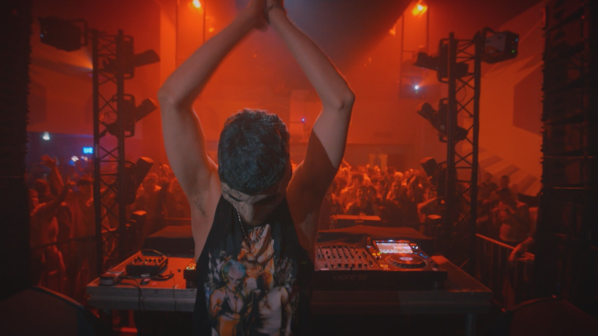
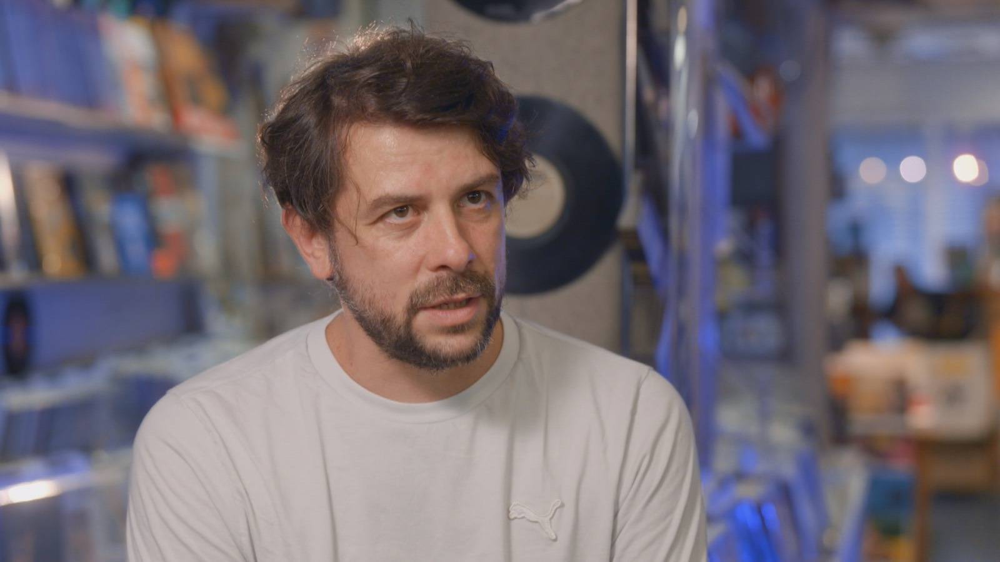
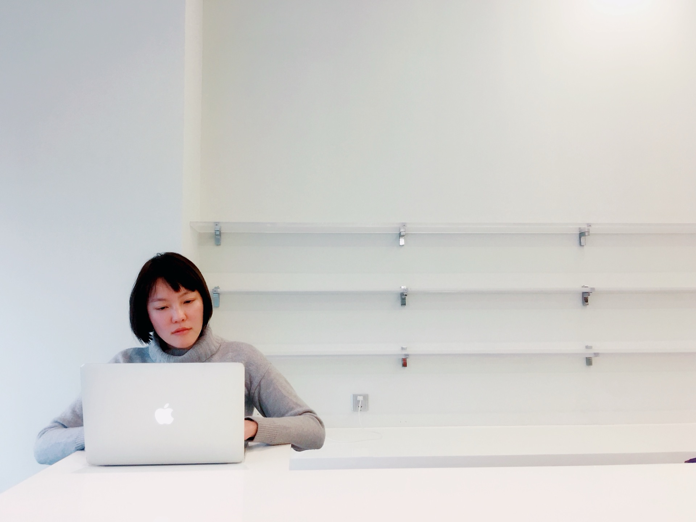
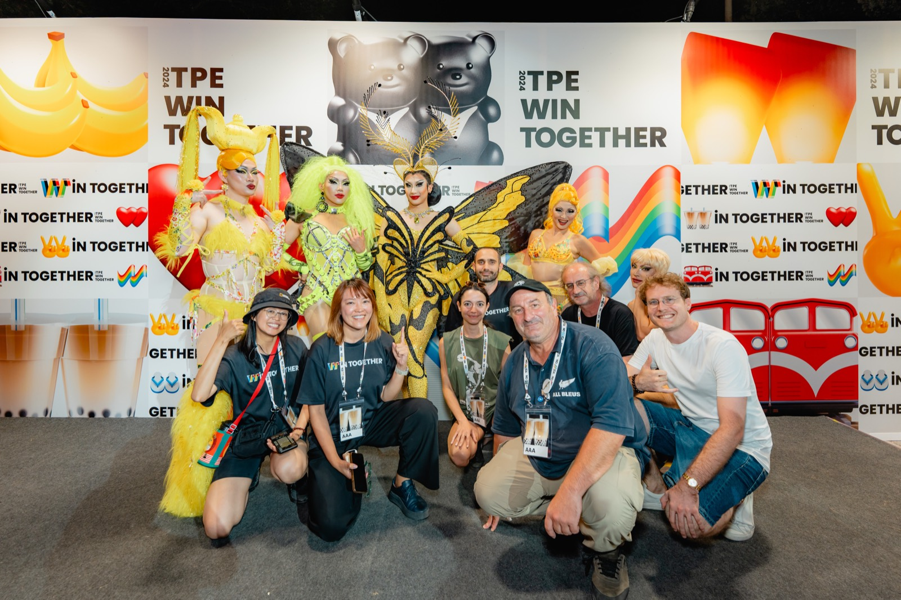
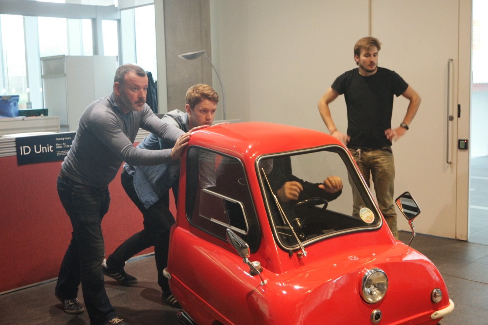

200M
viewers for Top Gear China S02E05
A broadcast-scale proof point from earlier television work.


Artists, identity, and Taiwan on the world stage. Directed as an intimate documentary spine for international viewers.


Human-centered stories for technical teams, founders, and ideas that need clarity without losing the people inside the system.
Documentary listening, bilingual scripts, spatial-brand films, and stories that help complex subjects become cinematic and clear.

